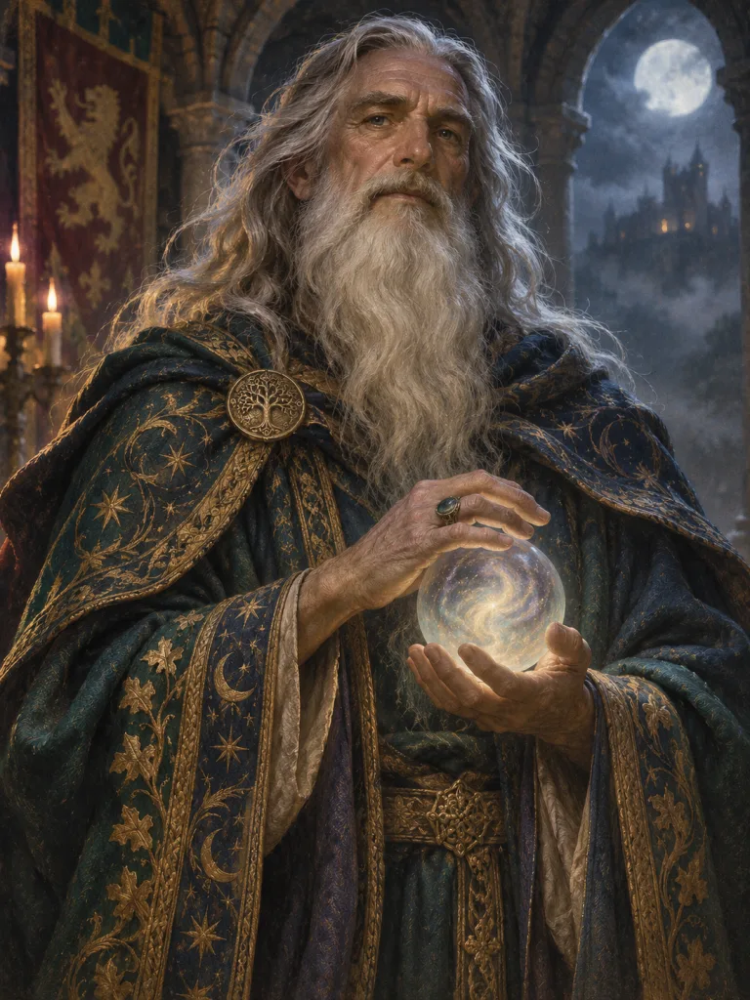
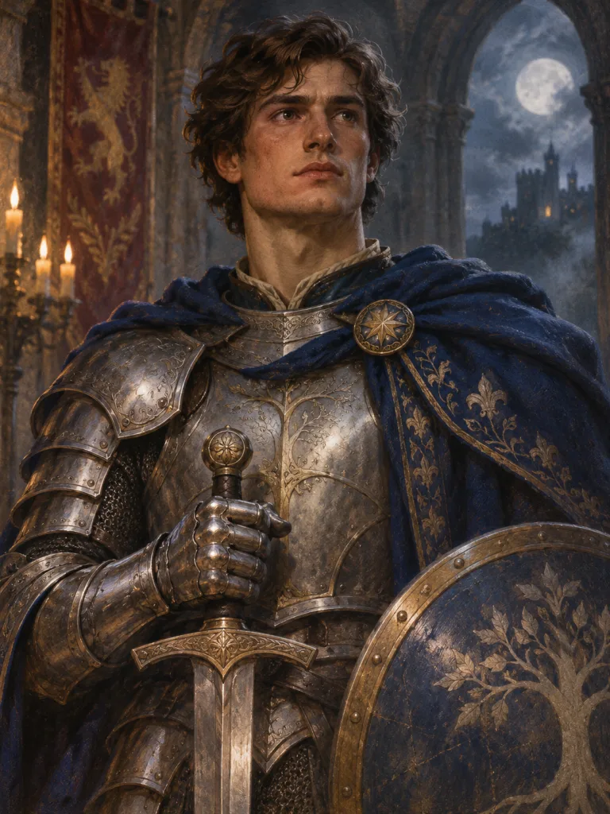
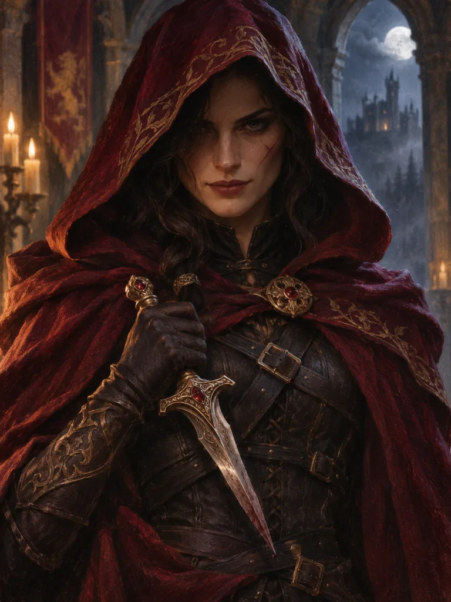
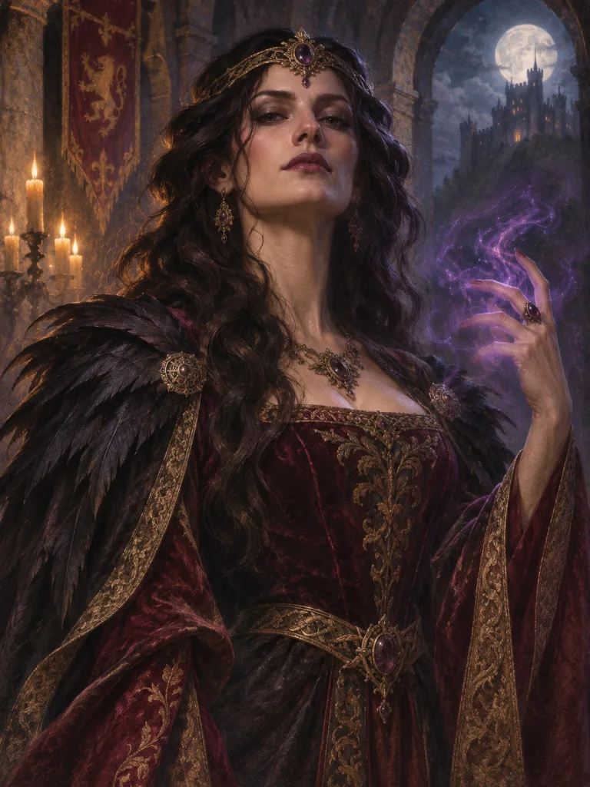
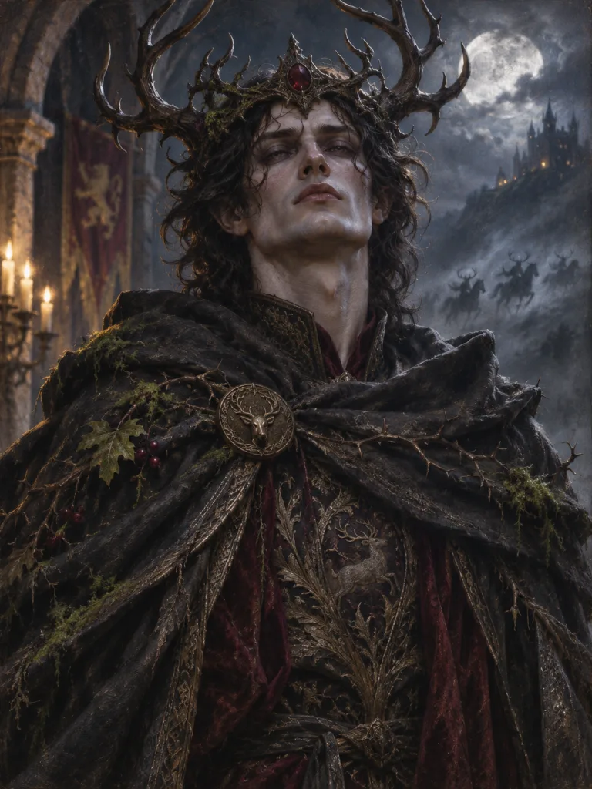
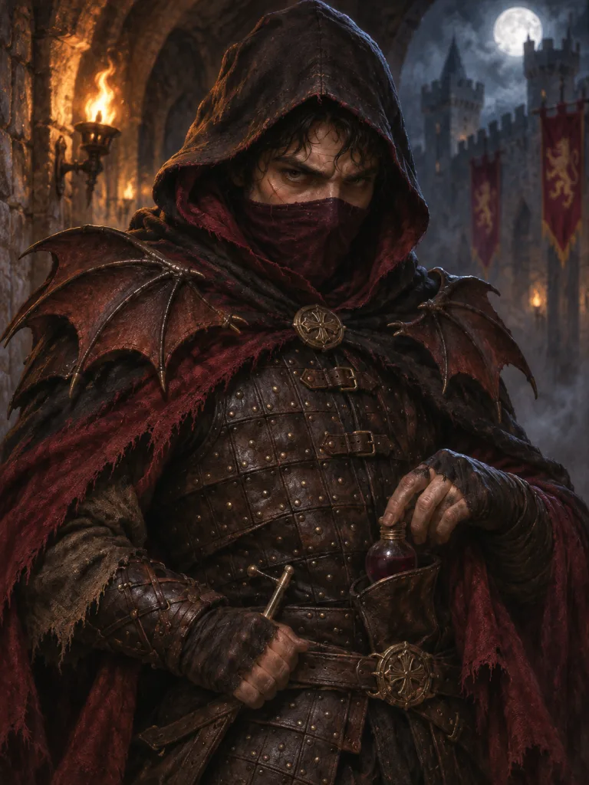
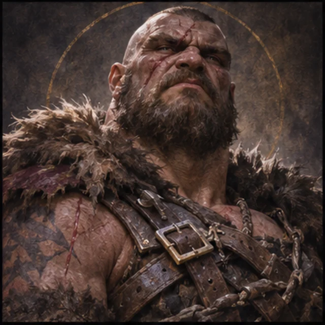

El Líder elige el número requerido de jugadores y puede incluirse a sí mismo. El liderazgo rota.
Cómo jugar a Ávalon
5 a 10 jugadoresEn persona o por llamada
Sin registroSolo necesitas un apodo
Móvil y ordenadorUna pantalla privada cada uno
7 idiomasCambiar en cualquier momento
CÓMO JUGAR
Las cuatro partes de cada juego.
Good necesita tres misiones exitosas y luego debe sobrevivir al Asesino. El mal gana con tres misiones fallidas o cinco propuestas rechazadas seguidas.
El equipo necesita más de la mitad de la mesa para aprobarlo. Cada voto se revela en conjunto.
El bien sólo puede jugar con el éxito. El mal puede jugar al fracaso. Sólo se revela el número total de cartas de Fallo.
Después de tres éxitos, el Asesino aún puede identificar a Merlín y robarle el juego al Mal.
Con siete o más jugadores, la Misión cuatro necesita dos cartas de Fallo para fallar.
Si cinco equipos para la misma misión son rechazados seguidos, Evil gana inmediatamente.
GUÍA DE FUNCIONES
Los 17 personajes
Comience con la alineación clásica. Explore ambas alineaciones a continuación; Los caracteres avanzados aparecen sólo cuando los habilita el host.
Buenos personajes

Bien
Merlín
Conoces a los jugadores del Mal, excepto a Mordred. Mantente oculto: si el Asesino te encuentra, gana el Mal.

Bien
Percival
Ves a Merlín y a Morgana, pero no sabes quién es quién. Protege al verdadero Merlín.
Bien
Sirviente leal
No tienes información especial. Usa la discusión y los votos para descubrir a los traidores.
Bien
Lancelot del Bien
Perteneces al Bien. En las reglas básicas de Lancelot, tú y Lancelot del Mal os conocéis.
Bien
Clérigo
Al comienzo de la partida, descubres si el primer Líder pertenece al Bien o al Mal.
Bien
Alborotador
Perteneces al Bien, pero debes mostrar lealtad al Mal cuando te inspeccionen.
Bien
Siervo no confiable
Perteneces al Bien y conoces al Asesino, pero Merlín te ve como miembro del Mal. Tras tres misiones exitosas, el Asesino intenta reclutarte primero.
personajes malvados

Mal
Asesino
Si el Bien completa tres misiones, eliges a un jugador para asesinar. Si es Merlín, gana el Mal.

Mal
Morgana
Ante Percival, apareces como Merlín.
Mal
Mordred
Merlín no ve que perteneces al Mal.

Mal
Oberón
No conoces a los demás jugadores del Mal y ellos no te conocen. Merlín sí te ve.

Mal
Esbirro de Mordred
Conoces a tus aliados del Mal, excepto a Oberón. Sabotea las misiones.
Mal
Lancelot del Mal
Perteneces al Mal. En las reglas básicas de Lancelot, tú y Lancelot del Bien os conocéis.
Mal
Lunático
Perteneces al Mal y debes elegir Fracaso en cada misión en la que participes.

Mal
Bruto
Perteneces al Mal, pero solo puedes elegir Fracaso en las tres primeras misiones.
Mal
Revelador
Perteneces al Mal y debes revelar tu identidad después de la segunda misión fallida.
Mal
Embaucador
Perteneces al Mal y puedes mostrar cualquiera de las dos lealtades cuando te inspeccionen.
Módulos opcionales
Dama del Lago (opcional, 7+): después de las Misiones 2, 3 y 4, el poseedor verifica en secreto la lealtad de un jugador y luego le pasa la Dama. No se pueden controlar los antiguos titulares.
Excalibur permite a su poseedor reemplazar la tarjeta Quest de otro miembro del equipo. La variante Lancelot Allegiance roba una carta de lealtad al comienzo de cada Misión; En este modo los dos Lancelot no se conocen.
CUENTA DE JUGADORES
Configuraciones para 5 a 10 jugadores
| Jugadores | bueno | mal | Equipos de misión |
|---|---|---|---|
| 5 | 3 | 2 | 23233 |
| 6 | 4 | 2 | 23434 |
| 7 | 4 | 3 | 23344 |
| 8 | 5 | 3 | 34455 |
| 9 | 6 | 3 | 34455 |
| 10 | 6 | 4 | 34455 |
Los tamaños de los equipos van desde Quest 1 a 5. Con más de 7 jugadores, Quest 4 necesita dos cartas de Fallo.
Preguntas frecuentes
Preguntas comunes
¿Necesitamos una aplicación o una cuenta?
No. Todos abren el enlace de la sala en un navegador actual e ingresan el nombre del juego.
¿Tenemos que estar en el mismo lugar?
No. Habla alrededor de una mesa real o mantén abierta una llamada de voz o video para jugar de forma remota.
¿Puede otro jugador leer mi rol?
Los roles y acciones están cifrados en el navegador. Esto protege contra clientes normales y la inspección casual de bases de datos, pero no contra un navegador host comprometido o un cliente modificado deliberadamente.
¿Es este un producto oficial?
No. Es un proyecto gratuito y no oficial para fans, sin afiliación, patrocinio ni respaldo de los diseñadores, editores o titulares de derechos del juego original.